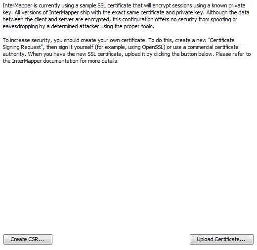
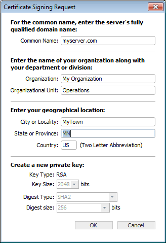

SSL Certificates
InterMapper's web and remote servers can employ a certificate to encrypt
the data going between the server and clients. This assures that the client
has connected to the actual server, and not another server acting as an
impostor.
InterMapper ships with a certificate signed by Help/Systems Inc. This will work;
the data is encrypted. But it's not using strong encryption (that is, it's
easily broken) and web browsers using HTTPS connections will give a warning
that there is a problem with the certificate, and that the data might be intercepted
in transit.
To get stronger encryption and verification that the server is authentic,
you can create and install your own SSL certificate. This is a three-step
process:
-
Create a Certificate Signing Request (CSR). The CSR contains
all the information needed to identify the computer. InterMapper has a built-in
function for collecting this information and building the certificate.
- Sign the CSR. Signing is a process where an authority verifies
the information in the certificate.
-
Upload the signed certificate into InterMapper to make it operational.
In either case, you must first create a Certificate Signing Request
(CSR), which is a file that you can create using InterMapper. You then
sign the CSR yourself, or send it to a commercial Certificate Authority
to sign.
Use the SSL Certificate panel, available from the Server Configuration section
of the Server Settings window to create a Certificate Signing Request,
and to upload a signed certificate to the InterMapper server.
The remainder of this topic describes the three separate steps in detail.
The SSL Certificate Panel

Step 1: Create a Certificate Signing Request
-
From the Edit menu, choose Server Settings...
The Server Settings window appears.
- In the Server Configuration section, click SSL
Certificate. The SSL Certificate panel appears.
- Click Create new CSR... The Certificate Signing
Request window appears, as shown below.
- Enter the required information as described below,
and click OK. A 1,024-bit private key is generated for
your computer, and the information is then used to create the Certificate
Signing Request. The key and a copy of the CSR are saved in the InterMapper
Settings:Certificates folder, and a standard Save File dialog
appears.
You are being asked to save a copy of the CSR (with a filename of
the FullyQualifiedDomainName.csr) on your disk. We recommend you save
this on the desktop so it's easy to find when you create a signed
certificate. After you have requested a signed certificate, you can
discard this file.
- Click Save. The new certificate is saved
in the specified location.
Enter the following information for your
Certificate Signing Request:

The Certificate Signing Request
window.
- Common Name
Enter your full DNS name or IP address of your server. If possible,
it should include your domain name.
- Organization
Enter the name of your organization.
- Organizational Unit
If applicable, enter the name of an organizational unit within your
organization, such as a department or division name.
- Country
Enter a two-letter abbreviation for your country
- State or Province
Enter a state or province name or abbreviation
- City or Locality
Enter a descriptive location of the server.
- Make new private key
The first time you generate a CSR, this box is dimmed. On subsequent
uses, select this check box to create a new private key. Leave it unchecked
to use the same private key.
- Key Size
Choose 1024 or 2048 bits.
- Digest Type
Choose SHA1 or SHA2. SHA1 is the default value.
- Digest Size
If you choose SHA2, choose 256 or 512 bits.
When you click the OK button, InterMapper generates a private key for your computer, then use the information entered above
to create the Certificate Signing Request. InterMapper will save following
files in the InterMapper Settings:Certificates folder:
- SSLCertificateKeyFile
contains your private key
- Pending.csr the
Certificate Signing Request (CSR) file
You will also be asked to save another copy of the CSR (with a filename
of the FullyQualifiedDomainName.csr) on your disk. We recommend
you save this on the desktop so it's easy to find when you are ready to
create a signed certificate. You may discard this file after you have
requested a signed certificate.
Step 2: Sign the Certificate
Once you have a CSR file, you must have it signed. There are two ways
to do
this:
-
You can use the OpenSSL software (available from http://www.openssl.org)
or
use the Windows CA to sign this CSR. This will create a self-signed
certificate
that you can easily use within your own organization.
- You can send the CSR to any of several commercial certificate authorities,
such as InstantSSL (http://www.instantssl.com),
Verisign
(http://www.verisign.com/products/site/index.html),
or Thawte
(http://www.thawte.com). These
companies return a signed certificate that is globally-recognizable as authentic.
Step 3: Uploading the Signed Certificate
After the certificate has been signed, you can upload it using Upload
new
Certificate... Either copy and paste the text of the certificate
into this window, or click Browse...
and locate the certificate file on your hard drive.

At the conclusion of this, the InterMapper Settings:Certificates folder
contains
files named:
- SSLCertificateKeyFile contains your private key, created
above.
- SSLCertificateFile
contains your signed certificate (the
file from Verisign, InstantSSL, or OpenSSL.) Be sure to remove any
suffix (such as ".pem") from the file name.
- SSLCACertificateFile contains the public certificate chain
of the signing CA's (in order).
Stop the affected server from the Server Settings window, and then
start it again. These certificates are then used for HTTPS and InterMapper
Remote client connections if the SSL/TLS boxes are checked in the respective
server settings.
Using an externally generated CSR and Private Key
If you use a different application from InterMapper to create your Certificate
Signing Request (CSR), InterMapper will not have access to the private
key used to create the CSR. To upload your certificate with the private
key, create one text file containing the signed certificate, the private
key, and the CA's public certificate chain (if included), and use the
"Upload new certificate..." button to upload this combined file.
Technical Notes
The design for this scheme is based on the SSL section of the Apache
Mod-SSL httpd.conf file.
- For InstantSSL, the SSLCACertificateFile is the same as
the ca-bundle file, described in http://www.instantssl.com/ssl-certificate-support/cert_installation/
- If there is no SSLCertificateKeyFile, InterMapper will look
for the private key in SSLCertificateFile.
- InterMapper will always load the additional CA certificates,
if they exist, from SSLCertificateFile first, then it will check SSLCACertificateFile
if it exists.
- You can set up the configuration so
one file, named SSLCertificateFile, contains everything. The file must contain a key, certification, and trust chain in that order, or the certificate is not imported properly.
-
InterMapper will convert CR's to LF's in the file data before
loading it. There's no need to worry about CR-LF translation issues.